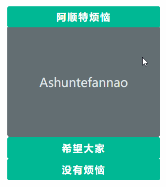
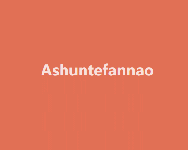

函数进阶 函数是将复用的代码块封装起来的模块，在JS中函数还有其他语言所不具有的特性，接下来我们会详细掌握使用技巧。
声明定义 在JS中函数也是对象函数是Function类创建的实例，下面的例子可以方便理解函数是对象。
new Function(...argus,funcContent)
1 2 let fun = new Function("title", "type", "console.log(title,type)"); fun("Ashun", "Controller");
标准语法是：使用函数声明来定义函数
function funcName(argus){…funcContent}
1 2 3 4 function as(num) { return num+=2; } console.log(as(3));
对象字面量属性函数简写
1 2 3 4 5 6 7 8 9 10 11 12 let user = { name: null, getName: function (name) { return this.name; }, //简写形式 setName(value) { this.name = value; } } user.setName('阿顺'); console.log(user.getName()); // 阿顺
普通形式定义的全局函数会声明在window对象中，这很危险，建议使用后面章节的模块处理
1 2 3 4 5 function Ashun() { console.log("普通形式定义的全局函数，会追加到window中"); console.log(window.Ashun); } Ashun();
再比如：当我们定义了 screenX 函数后就覆盖了window.screenX方法
1 console.log(window.screenX); //999
1 2 3 4 function screenX() { return "阿顺"; } console.log(window.screenX);
使用let/const时不会压入window
注意：使用变量接收定义的函数时，整体为表达式，必须以;结尾，不然会报错。
1 2 3 4 let func = function as() { return "Ashuntefannao.com"; }; console.log(window.func); //undefined
匿名函数 函数是对象，所以可以通过赋值，指向到函数对象的指针，当然指针也可以传递给其他变量，注意结尾要以;结束(整体为表达式)。下面使用函数表达式将 匿名函数 赋值给变量
1 2 3 4 5 6 7 8 let as = function(num) { return num+=2; }; console.log(as instanceof Object); //true let tfn = as; console.log(tfn(3));
标准声明的函数优先级更高，解析器会优先提取函数并放在代码树顶端，所以标准声明函数位置不限制，所以下面的代码可以正常执行。
1 2 3 4 console.log(as(3)); function as(num) { return ++num; };
标准声明优先级高于赋值声明
1 2 3 4 5 6 7 8 9 console.log(as(3)); //4 function as(num) { return ++num; } var as = function() { return "as"; };
程序中使用匿名函数的情况非常普遍
1 2 3 4 function sum(...args) { return args.reduce((a, b) => a + b); } console.log(sum(1, 2, 3));
函数提升 函数也会提升到前面，但优先级高于var变量
1 2 3 4 5 6 var c = 1; function c(c) { console.log(c); var c = 2; } c(3); //TypeError: c is not a function
变量定义函数的形式，函数不会被提升
1 2 3 4 5 6 7 8 9 console.log(as("Ashun")); //Ashun function as(title) { return title; } var as = function () { return "ashun"; };
小测试
1 2 3 4 5 6 var c = 1; function d() { console.log(c); var c = 2; } d();
1 2 3 4 5 6 var c = 1; function d(c) { console.log(c); var c = 2; } d(3);
其实第(1)个结果很快就答出来了:undefined
原因: var定义变量(除函数)，会提升到当前作用域的最前面，因此打印undefined。
但是第(2)个结果一开始我认为是undefined，但其实是3
原因: 虽然也会变量提升，但是若接收的参数与函数内部定义的变量名重复，并且该变量没有赋值，则该变量还为接收的参数.
1 2 3 4 5 6 var c = 1; function d(c) { var c; console.log(c); } d(3); //3
1 2 3 4 5 6 7 var c = 1; function d(c) { console.log(c); var c = 2; console.log(c); } d(3); //3 2
形参实参 形参是在函数声明时设置的参数，实参指在调用函数时传递的值。
形参数量大于实参时，没有传参的形参值为 undefined
实参数量大于形参时，多于的实参将忽略并不会报错
1 2 3 4 5 6 // n1,n2 为形参 function sum(n1, n2) { return n1+n2; } // 参数 2,3 为实参 console.log(sum(2, 3)); //5
当没传递参数时值为undefined
1 2 3 4 function sum(n1, n2) { return n1 + n2; } console.log(sum(2)); //NaN
默认参数 下面通过计算年平均销售额来体验以往默认参数的处理方式
1 2 3 4 5 6 //total:总价 year:年数 function avg(total, year) { year = year || 1; return Math.round(total / year); } console.log(avg(2000, 3));
使用ES6默认参数方式如下
1 2 3 4 function avg(total, year = 1) { return Math.round(total / year); } console.log(avg(2000, 3));
下面通过排序来体验新版默认参数的处理方式，下例中当不传递 type 参数时使用默认值 asc。
1 2 3 4 function sortArray(arr, type = 'asc') { return arr.sort((a, b) => type == 'asc' ? a - b : b - a); } console.log(sortArray([1, 3, 2, 6], 'desc'));
默认参数要放在最后面
默认参数就是为了在使用者默认配置时不用传参，若默认参数放在前面，而非默认参数放在后面，则当使用者默认配置时，为了传递非默认参数，就需要把前面的默认参数都传递进去。
1 2 3 4 5 //total:价格,discount:折扣,dis:折后折 function sum(total, discount = 0, dis = 0) { return total * (1 - discount) * (1 - dis); } console.log(sum(2000, undefined, 0.3));
立即执行 立即执行函数指函数定义时立即执行
1 2 3 4 5 "use strict"; (function () { var web = 'astfn.github.io'; })(); console.log(web); //web is not defined
使用 let/const 有块作用域特性，所以使用以下方式也可以产生私有作用域
1 2 3 4 { let web = 'astfn.github.io'; } console.log(web);
Callback 函数可以做为参数传递，这也是大多数语言都支持的语法规则。
1 2 3 4 5 6 7 8 <body> <button>订阅</button> </body> <script> document.querySelector('button').addEventListener('click', function () { alert('感谢订阅'); }) </script>
函数可以做为参数传递
1 2 3 4 5 function filterFun(item) { return item <= 3; } let arr = [1, 2, 3, 4, 5].filter(filterFun); console.log(arr); //[1,2,3]
arguments arguments 是在函数内部获得所有参数集合的一个方式 ，下面是使用 arguments 求和的例子
arguments是一种类数组的对象，属性名称依次为0~n，且包含callee和length属性，但其不是Array，所以不能够直接使用数组的方法，若要使用Array的方法，我们需要将其转化为数组，或借用数组原型的方法。
1 2 3 function sum() { return [...arguments].reduce((total, num) => total += num , 0); }
1 2 3 function sum() { return Array.from(arguments).reduce((total, num) => (total += num), 0); }
1 2 3 4 5 6 7 8 function sum() { return Array.prototype.reduce.call( arguments, (pre, v) => (pre += v), 0 ); } console.log(sum(1, 2, 3)); //6
更建议使用展示语法接收多个参数
1 2 3 4 function sum(...args) { return args.reduce((a, b) => a + b); } console.log(sum(2, 3, 4, 2, 6)); //17
箭头函数 箭头函数是函数声明的简写形式，在使用递归调用、构造函数、事件处理器时不建议使用箭头函数。
无参数时使用空扩号即可
1 2 3 4 let sum = () => { return 1 + 3; } console.log(sum()); //4
函数体为单一表达式时不需要 return 返回处理，系统会自动返回表达式计算结果。
1 2 let sum = () => 1 + 3; console.log(sum()); //4
多参数传递与普通声明函数一样使用逗号分隔
1 2 3 4 let arr = [1, 8, 3, 5].filter((item, index) => { return item <= 3; }); console.log(arr);
只有一个参数时可以省略括号
1 2 let arr = [1, 8, 3, 5].filter(item => item <= 3); console.log(arr);
有关箭头函数的作用域知识会在后面章节讨论
标签函数 之前在String的标签模板中已经介绍过了，使用标签函数，能够处理string中的普通字符串、变量。
使用函数来解析标签字符串，第一个参数是字符串值的数组，其余的参数为标签变量。
1 2 3 4 5 6 function Ashun(str, ...argus) { console.log(str); //["", "-", "", raw: Array(3)] console.log(argus); //["ashun", "ashuntefannao.com"] } let name = 'ashun',url = 'ashuntefannao.com'; Ashun `${name}-${url}`;
this指向 调用函数时 this 会隐式传递给函数指函数调用时的关联对象，也称之为函数的上下文。
独立存在的函数,this指向window
函数作为对象的方法，this指向该对象
箭头函数本身没有this指向，会使用父级作用域的this指向。
函数调用 全局环境下this就是window对象的引用
1 2 3 <script> console.log(this == window); //true </script>
使用严格模式时在全局函数内this为undefined
1 2 3 4 5 6 7 8 var as = "阿顺"; function get() { "use strict"; console.log(this); //undefined return this.as; } console.log(get()); //严格模式将产生错误 TypeError: Cannot read property 'as' of undefined
对象方法 函数为对象的方法时this 指向该对象
可以使用多种方式创建对象，下面是使用构造函数创建对象
构造函数
函数当被 new 时即为构造函数，一般构造函数中包含属性与方法。函数中的上下文指向到实例对象。
构造函数主要用来生成对象，里面的this默认就是指当前对象
1 2 3 4 5 6 7 8 9 function User() { this.name = "阿顺"; this.say = function() { console.log(this); //User {name: "阿顺", say: ƒ} return this.name; }; } let as = new User(); console.log(as.say()); //阿顺
对象字面量
下例中的as函数不属于对象方法所以指向window
show属于对象方法执向 obj对象
1 2 3 4 5 6 7 8 9 10 11 12 let obj = { site: "阿顺", show() { console.log(this.site); //阿顺 console.log(`show method in :${this} 中`); //show method in :[object Object] 中 function as() { console.log(`as function in : ${this} 中`); //as function in : [object Window] 中 } as(); }, }; obj.show();
在方法中使用函数时，有些函数可以改变this如forEach、map…第二个参数为执行上下文，当然也可以使用后面介绍的apply/call/bind，或者直接使用箭头函数。
1 2 3 4 5 6 7 8 9 10 let Lesson = { site: "阿顺", lists: ["js", "css", "mysql"], show() { return this.lists.map(function(title) { return `${this.site}-${title}`; }, this); } }; console.log(Lesson.show());
也可以在父作用域中定义引用this的变量
1 2 3 4 5 6 7 8 9 10 11 let Lesson = { site: "阿顺", lists: ["js", "css", "mysql"], show() { const self = this; return this.lists.map(function(title) { return `${self.site}-${title}`; }); } }; console.log(Lesson.show());
箭头函数 箭头函数没有this, 也可以理解为箭头函数中的this 会继承定义函数时的上下文，可以理解为和外层函数指向同一个this。
如果想使用函数定义时的上下文中的this，那就使用箭头函数
下例中的匿名函数的执行环境为全局所以 this 指向 window。
1 2 3 4 5 6 7 8 9 10 var name = 'ASHUN'; var obj = { name: 'ashun', getName: function () { return function () { return this.name; } } } console.log(obj.getName()()); //返回window.name的值ASHUN
以往解决办法：会在父级函数(对象方法)中定义变量，保留this，然后在独立存在的函数中使用。
1 2 3 4 5 6 7 8 9 10 11 var name = 'ASHUN'; var obj = { name: '阿顺', getName: function () { var self = this; return function () { return self.name; } } } console.log(obj.getName()()); //阿顺
使用箭头函数后 this 为定义该函数的上下文，也可以理解为定义时父作用域中的this
1 2 3 4 5 6 7 8 9 10 var name = 'ASHUN'; var obj = { name: '阿顺', getName: function () { return () => { return this.name; } } } console.log(obj.getName()()); //阿顺
事件中使用箭头函数结果不是我们想要的
事件函数可理解为对象onclick设置值，所以函数声明时this为当前对象
但使用箭头函数时this为声明函数上下文
下面体验使用普通事件函数时this指向元素对象
使用普通函数时this为当前DOM对象
1 2 3 4 5 6 7 8 9 10 11 12 13 14 15 <body> <button desc="ashun">button</button> </body> <script> let Dom = { site: "阿顺", bind() { const button = document.querySelector("button"); button.addEventListener("click", function() { alert(this.getAttribute("desc")); }); } }; Dom.bind(); </script>
下面是使用箭头函数时this指向上下文对象，若想获取当前的DOM，可以通过e.target|e.srcElement
1 2 3 4 5 6 7 8 9 10 11 12 13 14 15 <body> <button desc="ashun">button</button> </body> <script> let Dom = { site: "阿顺", bind() { const button = document.querySelector("button"); button.addEventListener("click", event => { alert(this.site + event.target.innerHTML); }); } }; Dom.bind(); </script>
apply/call/bind 能够改变this指向，并传入参数，也可以理解为对象借用方法，就现像生活中向邻居借东西一样的事情。
原理分析 构造函数中的this默认是一个空对象，然后构造函数处理后把这个空对象变得有值。再隐式的设置这个对象的原型。
1 2 3 4 function User(name) { this.name = name; } let as = new User("阿顺");
可以改变构造函数中的空对象，即让构造函数this指向到另一个对象。传入参数初始化属性，再设置该对象的原型。就可以模仿new 构造函数()的过程。
1 2 3 4 5 6 7 function User(name) { this.name = name; } let obj = {}; User.call(obj, "阿顺"); Object.setPrototypeOf(obj,User.prototype) console.log(obj);
apply/call call与apply 用于显示的设置函数的上下文，两个方法作用一样都是将对象绑定到this，只是在传递参数上有所不同。
apply 用数组传参
call 需要分别传参
与 bind 不同call/apply 会立即执行函数
语法使用介绍
1 2 3 4 5 6 7 8 9 10 11 function show(title) { alert(`${title+this.name}`); } let zs = { name: '张三' }; let lisi = { name: '李四' }; show.call(zs, 'Ashun'); show.apply(lisi, ['SHUN']);
使用 call 设置函数上下文
1 2 3 4 5 6 7 8 9 10 11 12 13 <body> <button message="阿顺">button</button> <button message="特烦恼">button</button> </body> <script> function show() { alert(this.getAttribute('message')); } let bts = document.getElementsByTagName('button'); for (let i = 0; i < bts.length; i++) { bts[i].addEventListener('click', () => show.call(bts[i])); } </script>
找数组中的数值最大值
1 2 3 4 5 let arr = [1, 3, 2, 8]; console.log(Math.max(arr)); //NaN console.log(Math.max.apply(Math, arr)); //8 console.log(Math.max.call(Math,...arr)); //8 console.log(Math.max(...arr)); //8
实现构造函数属性继承
下例相当于Article、Lesson，都继承了Request的get方法
1 2 3 4 5 6 7 8 9 10 11 12 13 14 15 16 17 18 19 20 21 22 23 24 25 26 27 28 "use strict"; function Request() { this.get = function (preset = {}) { let paramsTxt = Object.keys(preset) .map((key) => `${key}=${preset[key]}`) .join("&"); return `${this.url}?${paramsTxt}`; }; } //控制文章请求 function Article() { this.url = "ashun/article/index.html"; Request.call(this); } //控制课程请求 function Lesson() { this.url = "ashun/course/index.html"; Request.apply(this, []); } let articleReq = new Article(); let lessonReq = new Lesson(); console.log(articleReq.get({ name: "Ashun", type: "Controller" })); console.log(lessonReq.get({ row: 20, start: 999 }));
制作显示隐藏面板

1 2 3 4 5 6 7 8 9 10 11 12 13 14 15 16 17 18 19 20 21 22 23 24 25 26 27 28 29 30 31 32 33 34 35 36 37 38 39 40 41 42 43 44 45 46 47 48 49 50 51 52 53 54 55 56 57 58 59 60 61 62 63 64 65 66 67 68 69 70 <style> * { margin: 0; padding: 0; box-sizing: border-box; } main { width: 100%; margin: 10px auto; } dl { width: 90%; margin: 0 auto; text-align: center; } dt, dd { width: 100%; display: flex; justify-content: center; align-items: center; } dt { height: 35px; background-color: #00b894; color: white; font-weight: bold; letter-spacing: 2px; border-radius: 3px; cursor: pointer; } dd { background-color: #636e72; color: #dfe6e9; font-size: 20px; border-radius: 0px 0px 5px 5px; transition: 0.3s; height: 0px; overflow: hidden; } .show { height: 180px; } </style> <body> <main> <dl> <dt>阿顺特烦恼</dt> <dd>Ashuntefannao</dd> <dt>希望大家</dt> <dd>Ashuntefannao</dd> <dt>没有烦恼</dt> <dd>Ashuntefannao</dd> </dl> </main> </body> <script> function show(index) { let items = document.querySelectorAll("dd"); items.forEach((v) => v.classList.remove("show")); items[index].classList.add("show"); } let titles = document.querySelectorAll("dt"); titles.forEach((ele, i) => { ele.addEventListener("click", () => { show.call(null, i); }); }); </script>
bind bind(this,...args)在使用形式上与call相同。bind是复制函数行为。
与call、apply的不同之处：
bind绑定后，函数不会立即执行，需要被调用。
原理不同:
call、apply是在函数调用时改变this指向。
使用 bind 绑定函数时，会生成一个新函数，新函数的函数体与被绑定函数一样，bind 是在复制得到新函数时改变的this指向。
bind是复制函数行为
1 2 3 4 5 6 7 8 9 10 11 12 13 14 15 { let a = function () {}; let c = a.bind(); console.log(c); //ƒ () {} } { let a = function () {}; let c = a.call(); console.log(c); //undefined } { let a = function () {}; let c = a.apply(); console.log(c); //undefined }
绑定参数注意事项
1 2 3 4 5 6 7 8 9 function sum(a, b) { return this.f + a + b; } //使用bind会生成新函数 let newFunc = sum.bind({ f: 1 }, 3); //1+3+2 将2赋值给参数b即 a=3,b=2 console.log(newFunc(2));
在事件中使用bind
1 2 3 4 5 6 7 8 9 10 11 <body> <button>阿顺</button> </body> <script> document.querySelector("button").addEventListener( "click", function(event) { console.log(event.target.innerHTML + this.url); }.bind({ url: "Ashuntefannao.com" }) ); </script>
动态改变元素背景颜色，当然下面的例子也可以使用箭头函数处理

1 2 3 4 5 6 7 8 9 10 11 12 13 14 15 16 17 18 19 20 21 22 23 24 25 26 27 28 29 30 31 32 33 34 35 36 37 38 39 <style> * { margin: 0; padding: 0; box-sizing: border-box; } body { width: 100vw; height: 100vh; background-color: #e17055; color: rgba(255, 255, 255, 0.8); display: flex; justify-content: center; align-items: center; transition: 0.8s; } </style> <body> <h2>Ashuntefannao</h2> </body> <script> class Color { constructor(dom) { this.dom = dom; this.colors = [ "#fdcb6e","#55efc4","#00b894","#6c5ce7","#74b9ff","#e17055"]; this.run(); } run() { setInterval( function () { let random = Math.floor(Math.random() * this.colors.length); this.dom.style.backgroundColor = this.colors[random]; }.bind(this), 800 ); } } new Color(document.body); </script>